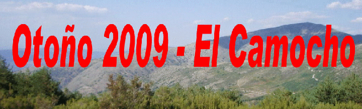

MÁGICO EN EL VALLE DEL AMBROZ
|
OFERTA |
OFERTA |
El otoño nos ofrece una riqueza de
colores, que asombran a todo el que lo ve, el amarillo intenso de los
chopos, el rojizo de los cerezos, el amarillo verdoso de los castaños,
el marrón de los robles, marrón oscuro de los alisos, rojo violáceo de
las parras silvestres y un largo etc, de gama cromática, ideal para los
fotógrafos.

¡¡¡ - NO TE PIERDAS DISFRUTAR CON NOSOTROS DE UN OTOÑO MÁGICO E INIGUALABLE CON LA GAMA DE COLORES QUE NOS PRESENTA EL PAISAJE Y ACTIVIDADES QUE PODEMOS REALIZAR EN ESTAS FECHAS. !!!